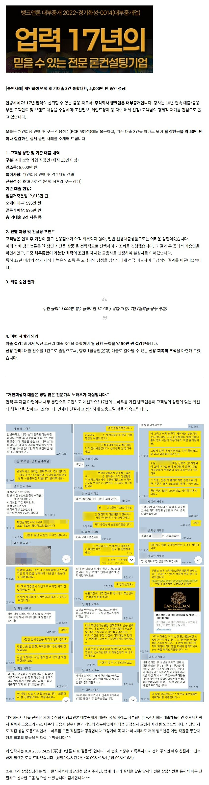
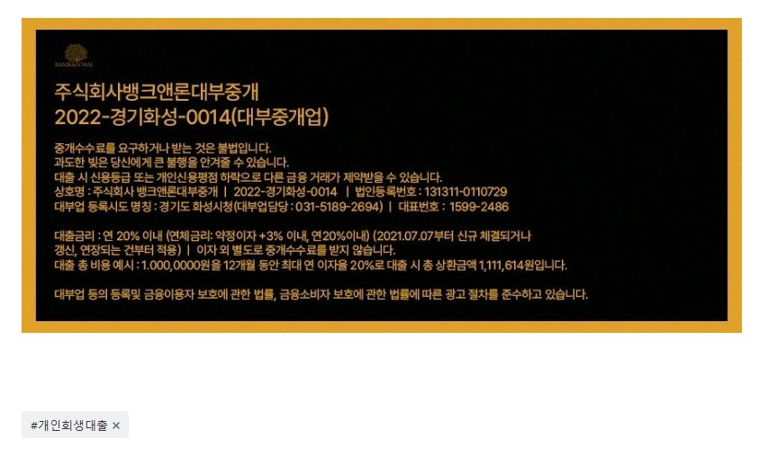

[개인회생대출] 면책후 기대출3건 통합대환으로 5천만 승인사례 (개인회생면책 2개월정도 경과되어, kcb581점인 저신용 상황에서 5000만 15.4% 7년상환으로 승인!!)

상담신청 -> https://cafe.naver.com/cityman88/29497
(** 635일 24시간 언제든 신청 가능 **)
대표번호 : 1599-2486 (대표전화 통화 가능시간 : 월~목 09시~18시 / 금 09시~16시)
https://cafe.naver.com/cityman88/310847
원본 백업에 없거나 외부 접근이 제한된 이미지입니다.
[필독사례모음] 개인회생자대출 필독 매니저 사례 모음 (개인회생자대출 알아보시는분들 필독필독!!)
"회생 폐지 직전이었는데..." 7.2회 미납(미납총액 1929만) 직장인 2,000만 원 승인 후기 https://cafe.naver.com/cityman88/310818 ...

https://cafe.naver.com/cityman88/311018